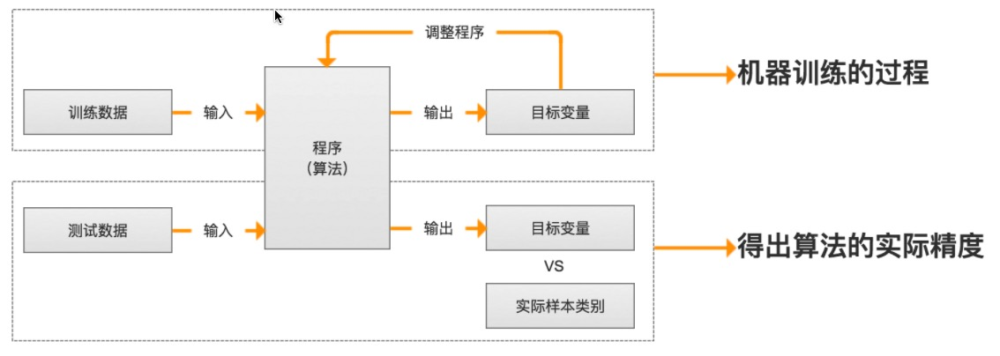
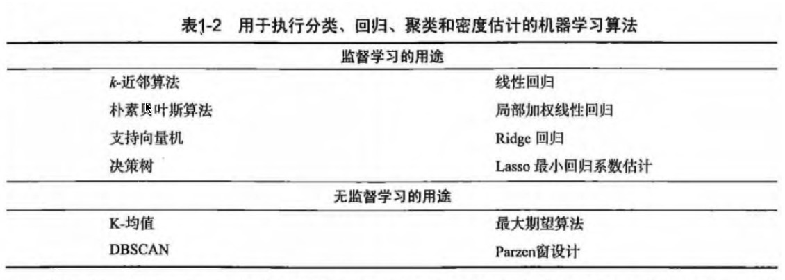
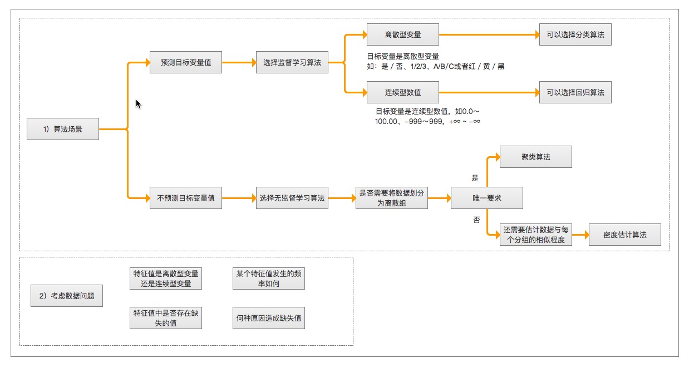

第1章 机器学习基础¶
机器学习 概述¶
机器学习(Machine Learning,ML) 是使用计算机来彰显数据背后的真实含义，它为了把无序的数据转换成有用的信息。是一门多领域交叉学科，涉及概率论、统计学、逼近论、凸分析、算法复杂度理论等多门学科。专门研究计算机怎样模拟或实现人类的学习行为，以获取新的知识或技能，重新组织已有的知识结构使之不断改善自身的性能。
它是人工智能的核心，是使计算机具有智能的根本途径，其应用遍及人工智能的各个领域，它主要使用归纳、综合而不是演绎。
- 海量的数据
- 获取有用的信息
机器学习 研究意义¶
机器学习是一门人工智能的科学，该领域的主要研究对象是人工智能，特别是如何在经验学习中改善具体算法的性能”。 “机器学习是对能通过经验自动改进的计算机算法的研究”。 “机器学习是用数据或以往的经验，以此优化计算机程序的性能标准。” 一种经常引用的英文定义是：A computer program is said to learn from experience E with respect to some class of tasks T and performance measure P, if its performance at tasks in T, as measured by P, improves with experience E.
机器学习已经有了十分广泛的应用，例如：数据挖掘、计算机视觉、自然语言处理、生物特征识别、搜索引擎、医学诊断、检测信用卡欺诈、证券市场分析、DNA序列测序、语音和手写识别、战略游戏和机器人运用。
机器学习 场景¶
- 例如：识别动物猫
- 模式识别（官方标准）：人们通过大量的经验，得到结论，从而判断它就是猫。
- 机器学习（数据学习）：人们通过阅读进行学习，观察它会叫、小眼睛、两只耳朵、四条腿、一条尾巴，得到结论，从而判断它就是猫。
-
深度学习（深入数据）：人们通过深入了解它，发现它会'喵喵'的叫、与同类的猫科动物很类似，得到结论，从而判断它就是猫。（深度学习常用领域：语音识别、图像识别）
-
模式识别（pattern recognition）: 模式识别是最古老的（作为一个术语而言，可以说是很过时的）。
- 我们把环境与客体统称为“模式”，识别是对模式的一种认知，是如何让一个计算机程序去做一些看起来很“智能”的事情。
- 通过融于智慧和直觉后，通过构建程序，识别一些事物，而不是人，例如: 识别数字。
- 机器学习（machine learning）: 机器学习是最基础的（当下初创公司和研究实验室的热点领域之一）。
- 在90年代初，人们开始意识到一种可以更有效地构建模式识别算法的方法，那就是用数据（可以通过廉价劳动力采集获得）去替换专家（具有很多图像方面知识的人）。
- “机器学习”强调的是，在给计算机程序（或者机器）输入一些数据后，它必须做一些事情，那就是学习这些数据，而这个学习的步骤是明确的。
- 机器学习（Machine Learning）是一门专门研究计算机怎样模拟或实现人类的学习行为，以获取新的知识或技能，重新组织已有的知识结构使之不断改善自身性能的学科。
-
深度学习（deep learning）: 深度学习是非常崭新和有影响力的前沿领域，我们甚至不会去思考-后深度学习时代。
- 深度学习是机器学习研究中的一个新的领域，其动机在于建立、模拟人脑进行分析学习的神经网络，它模仿人脑的机制来解释数据，例如图像，声音和文本。
-
参考地址：
机器学习已应用于多个领域，远远超出大多数人的想象，横跨：计算机科学、工程技术和统计学等多个学科。
- 搜索引擎: 根据你的搜索点击，优化你下次的搜索结果,是机器学习来帮助搜索引擎判断哪个结果更适合你（也判断哪个广告更适合你）。
- 垃圾邮件: 会自动的过滤垃圾广告邮件到垃圾箱内。
- 超市优惠券: 你会发现，你在购买小孩子尿布的时候，售货员会赠送你一张优惠券可以兑换6罐啤酒。
- 邮局邮寄: 手写软件自动识别寄送贺卡的地址。
- 申请贷款: 通过你最近的金融活动信息进行综合评定，决定你是否合格。
机器学习 组成¶
主要任务¶
- 分类（classification）：将实例数据划分到合适的类别中。
- 应用实例：判断网站是否被黑客入侵（二分类 ），手写数字的自动识别（多分类）
- 回归（regression）：主要用于预测数值型数据。
- 应用实例：股票价格波动的预测，房屋价格的预测等。
监督学习（supervised learning）¶
- 必须确定目标变量的值，以便机器学习算法可以发现特征和目标变量之间的关系。在监督学习中，给定一组数据，我们知道正确的输出结果应该是什么样子，并且知道在输入和输出之间有着一个特定的关系。 (包括：分类和回归)
- 样本集：训练数据 + 测试数据
- 训练样本 = 特征(feature) + 目标变量(label: 分类-离散值/回归-连续值)
- 特征通常是训练样本集的列，它们是独立测量得到的。
- 目标变量: 目标变量是机器学习预测算法的测试结果。
- 在分类算法中目标变量的类型通常是标称型(如：真与假)，而在回归算法中通常是连续型(如：1~100)。
- 监督学习需要注意的问题：
- 偏置方差权衡
- 功能的复杂性和数量的训练数据
- 输入空间的维数
- 噪声中的输出值
知识表示：- 可以采用规则集的形式【例如：数学成绩大于90分为优秀】
- 可以采用概率分布的形式【例如：通过统计分布发现，90%的同学数学成绩，在70分以下，那么大于70分定为优秀】
- 可以使用训练样本集中的一个实例【例如：通过样本集合，我们训练出一个模型实例，得出 年轻，数学成绩中高等，谈吐优雅，我们认为是优秀】
非监督学习（unsupervised learing）¶
- 在机器学习，无监督学习的问题是，在未加标签的数据中，试图找到隐藏的结构。因为提供给学习者的实例是未标记的，因此没有错误或报酬信号来评估潜在的解决方案。
- 无监督学习是密切相关的统计数据密度估计的问题。然而无监督学习还包括寻求，总结和解释数据的主要特点等诸多技术。在无监督学习使用的许多方法是基于用于处理数据的数据挖掘方法。
- 数据没有类别信息，也不会给定目标值。
- 非监督学习包括的类型：
- 聚类：在无监督学习中，将数据集分成由类似的对象组成多个类的过程称为聚类。
- 密度估计：通过样本分布的紧密程度，来估计与分组的相似性。
- 此外，无监督学习还可以减少数据特征的维度，以便我们可以使用二维或三维图形更加直观地展示数据信息。
强化学习¶
这个算法可以训练程序做出某一决定。程序在某一情况下尝试所有的可能行动，记录不同行动的结果并试着找出最好的一次尝试来做决定。 属于这一类算法的有马尔可夫决策过程。
训练过程¶

算法汇总¶

机器学习 使用¶
选择算法需要考虑的两个问题
- 算法场景
- 预测明天是否下雨，因为可以用历史的天气情况做预测，所以选择监督学习算法
- 给一群陌生的人进行分组，但是我们并没有这些人的类别信息，所以选择无监督学习算法、通过他们身高、体重等特征进行处理。
- 需要收集或分析的数据是什么
举例

机器学习 开发流程
- 收集数据: 收集样本数据
- 准备数据: 注意数据的格式
- 分析数据: 为了确保数据集中没有垃圾数据；
- 如果是算法可以处理的数据格式或可信任的数据源，则可以跳过该步骤；
- 另外该步骤需要人工干预，会降低自动化系统的价值。
- 训练算法: [机器学习算法核心]如果使用无监督学习算法，由于不存在目标变量值，则可以跳过该步骤
- 测试算法: [机器学习算法核心]评估算法效果
- 使用算法: 将机器学习算法转为应用程序
机器学习 数学基础¶
- 微积分
- 统计学/概率论
- 线性代数
机器学习 工具¶
Python语言¶
- 可执行伪代码
- Python比较流行：使用广泛、代码范例多、丰富模块库，开发周期短
- Python语言的特色：清晰简练、易于理解
- Python语言的缺点：唯一不足的是性能问题
- Python相关的库
- 科学函数库：
SciPy、NumPy(底层语言：C和Fortran) - 绘图工具库：
Matplotlib - 数据分析库
Pandas
- 科学函数库：
数学工具¶
- Matlab
附：机器学习专业术语¶
- 模型（model）：计算机层面的认知
- 学习算法（learning algorithm），从数据中产生模型的方法
- 数据集（data set）：一组记录的合集
- 示例（instance）：对于某个对象的描述
- 样本（sample）：也叫示例
- 属性（attribute）：对象的某方便表现或特征
- 特征（feature）：同属性
- 属性值（attribute value）：属性上的取值
- 属性空间（attribute space）：属性张成的空间
- 样本空间/输入空间（samplespace）：同属性空间
- 特征向量（feature vector）：在属性空间里每个点对应一个坐标向量，把一个示例称作特征向量
- 维数（dimensionality）：描述样本参数的个数（也就是空间是几维的
- 学习（learning）/训练（training）：从数据中学得模型
- 训练数据（training data）：训练过程中用到的数据
- 训练样本（training sample）:训练用到的每个样本
- 训练集（training set）：训练样本组成的集合
- 假设（hypothesis）：学习模型对应了关于数据的某种潜在规则
- 真相（group-true）:真正存在的潜在规律
- 学习器（learner）：模型的另一种叫法，把学习算法在给定数据和参数空间的实例化
- 预测（prediction）：判断一个东西的属性
- 标记（label）：关于示例的结果信息，比如我是一个“好人”。
- 样例（example）：拥有标记的示例
- 标记空间/输出空间（label space）：所有标记的集合
- 分类（classification）：预测时离散值，比如把人分为好人和坏人之类的学习任务
- 回归（regression）：预测值时连续值，比如你的好人程度达到了0.9，0.6之类的
- 二分类（binary classification）：只涉及两个类别的分类任务
- 正类（positive class）：二分类里的一个
- 反类（negative class）：二分类里的另外一个
- 多分类（multi-class classification）：涉及多个类别的分类
- 测试（testing）：学习到模型之后对样本进行预测的过程
- 测试样本（testing sample）：被预测的样本
- 聚类（clustering）：把训练集中的对象分为若干组
- 簇（cluster）：每一个组叫簇
- 监督学习（supervised learning）：典范--分类和回归
- 无监督学习（unsupervised learning）：典范--聚类
- 未见示例（unseen instance）：“新样本“，没训练过的样本
- 泛化（generalization）能力：学得的模型适用于新样本的能力
- 分布（distribution）：样本空间的全体样本服从的一种规律
- 独立同分布（independent and identically distributed，简称i,i,d.）:获得的每个样本都是独立地从这个分布上采样获得的。
- 作者：片刻 1988
- GitHub地址: https://github.com/apachecn/MachineLearning
- 版权声明：欢迎转载学习 => 请标注信息来源于 ApacheCN